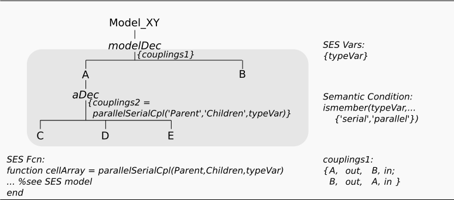
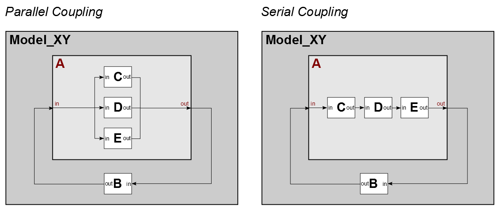

Dynamic Couplings Using SES Functions
Motivation
This example shows, how you can describe different coupling relations with a single
Aspect by using an SES Function. The SES specifies two system variants with different coupling relations for an aggregated system.
Basic SES:

In the SES specified model structures:

Entities
Variant 1 - The model consist of:
- atomic models (AM): B, C, D, E
- coupled models (CM): A
Description
Although, this SES possess no decision nodes, it still defines 2 different system variants for the CM A, one with a parallel coupling structure and the other with a serial coupling structure.
SES Variables
We define the SES Variable "typeVar" to control the selection of a specific coupling structure for CM A. If the value of "typeVar" is equal to "parallel", the parallel coupling structure shall be selected and if it is equal to "serial", the serial coupling structure shall be selected. We also define a Semantic Condition for this SES Variable.
SES Function
If you want use an SES Function for specifying couplings, the return value must follow specific rules:
- Return value must be a cell array with the size n x 4
- Structure for each coupling relation: {Source Comp. Name, From Port, Sink Comp. Name, To Port}
- Source and Sink Comp. Name are always of type string
- Ports can be of any type (normally a string or integer value)
The common way is to create a switch-case-construct and transfer an SES Variable, that is used to select one case. Here, the SES Variable "typeVar" is used. In each case part you define a specific coupling structure. The return value is a cell array, in which each row defines one coupling relation. SES Functions are always evaluated during pruning.
Reusable Coupling Functions and Pre-defined Internal Variables
It is possible to write SES Functions for defining couplings, that can be called several times in different Aspect nodes. Therefore, you have mostly to transfer information about the child nodes and eventually the parent node. It might be quite time consuming to do this each time in your SES Function call. That's why you can access these nodes by using pre-defined internal variables. If you want transfer all children of an Aspect you can use the internal variable 'Children'. It provides all information in a cell array. If you want transfer the parent node, you can use the internal variable 'Parent'. Be sure not to forget the single quotes, as it must be a string. The SES Function used in this example is written for any kind of number of children. Hence, you can use this SES Function, whenever a parallel or serial coupling relation is needed.